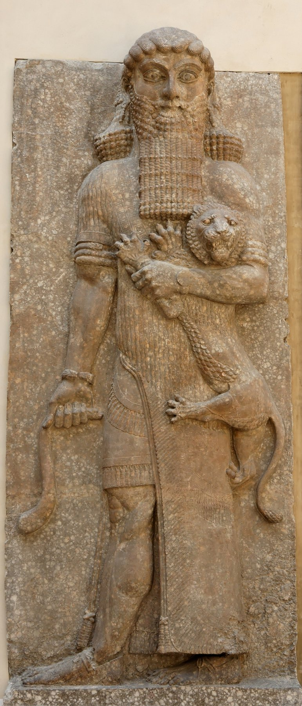

Sargon II Palace Inscriptions

- Find Name
- Sargon II Palace Inscriptions
- Description
- The palace inscriptions of Sargon II are the royal texts and reliefs that lined the walls of his palace at Dur-Sharrukin (modern Khorsabad), built 717–707 BC and occupied as his residence from 706 BC. They record Sargon's reign and conquests, including his claim to have captured Samaria in his first regnal year. The palace was excavated by Paul-Émile Botta beginning in 1842, and its reliefs and inscriptions are now dispersed among the Louvre, the British Museum and the Oriental Institute of Chicago.
- Historical Period
- Iron Age II
- Evidence Class
- Direct
- Interpretations
- Sargon is named in the Bible only once, in Isaiah 20:1, in connection with Ashdod; his palace inscriptions fill out the reign behind that single mention and behind the fall of Samaria (2 Kings 17:5-6; 18:9-12), which Shalmaneser V began and Sargon completed. Caution: the captive count for Samaria varies between translations (around 27,280 versus 27,290), so this entry gives 'over 27,000' rather than a precise figure; and royal inscriptions credit the king with victories his generals won, as Isaiah 20:1 itself hints by naming the Tartan (commander) as the one who took Ashdod.
- Alternative Names
- Inscriptions of Sargon II; Dur-Sharrukin Inscriptions
- Related Places
- Related Books
- Related Events
- Related People
- Scripture Illuminated
- Biblical Significance
- Sargon's inscriptions confirm the Assyrian conquest of Samaria that ended the northern kingdom (2 Kings 17) and give the historical setting for Isaiah 20:1, the Bible's only mention of Sargon, whose army took Ashdod.
- Artifact Date
- c. 717–705 BC
- Current Location
- Louvre, Paris; British Museum, London; Oriental Institute, Chicago (dispersed)
- Date Discovered
- 1842
- Discovery Location
- Khorsabad (Dur-Sharrukin), Iraq
- Timeline Era
- Divided Monarchy
Awaiting Review Not yet checked against scholarly sources. Treat its claims as provisional until this entry is reviewed. About verification
Sources: https://www.free-bible.com/archaeology/assyria/sargon-II-relief.php
https://christiananswers.net/dictionary/sargon.html
https://christiananswers.net/dictionary/sargon.html
Last reviewed: not yet reviewed